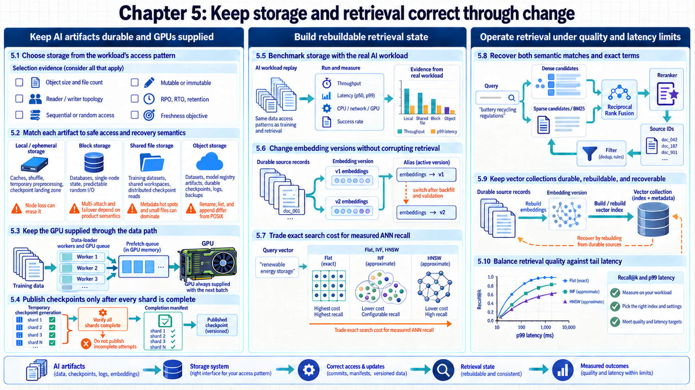
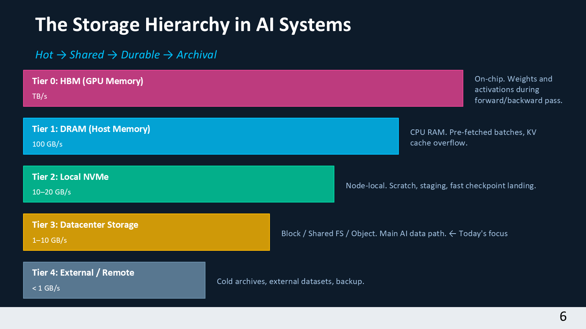
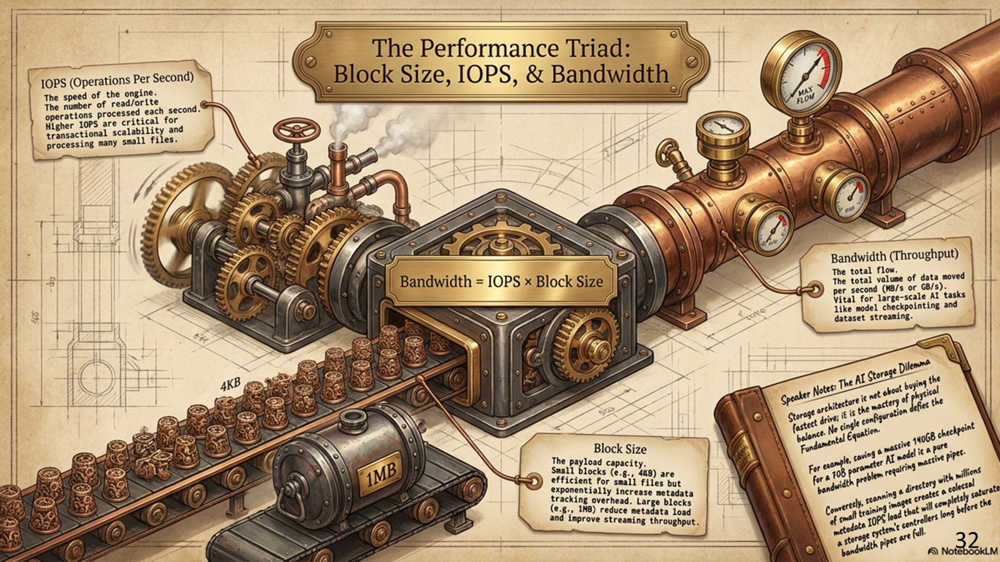
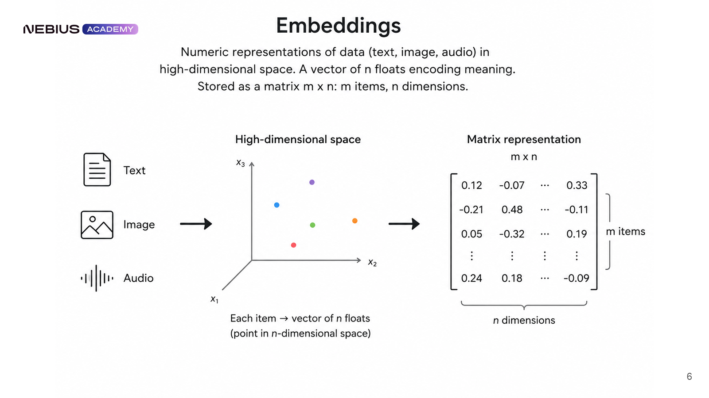
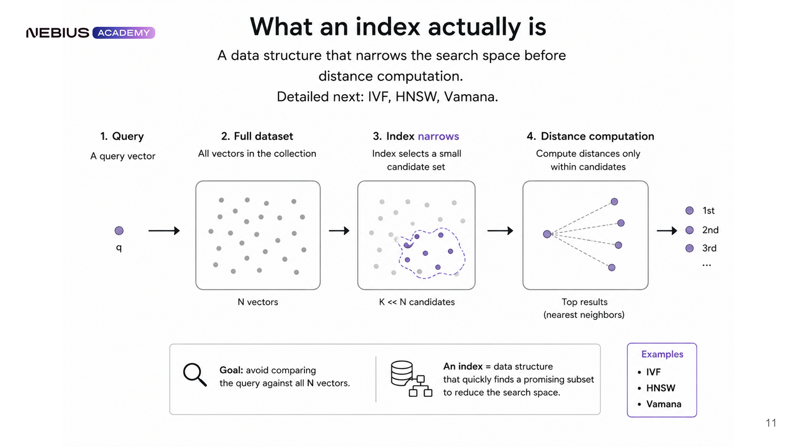
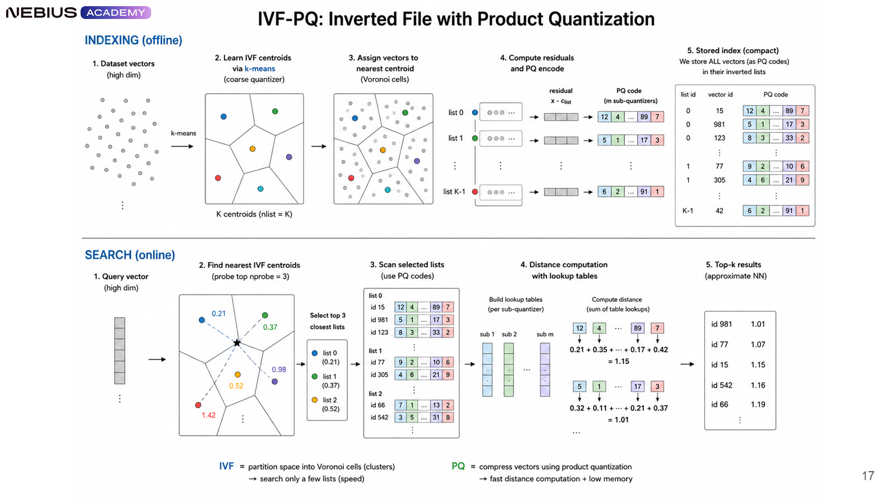
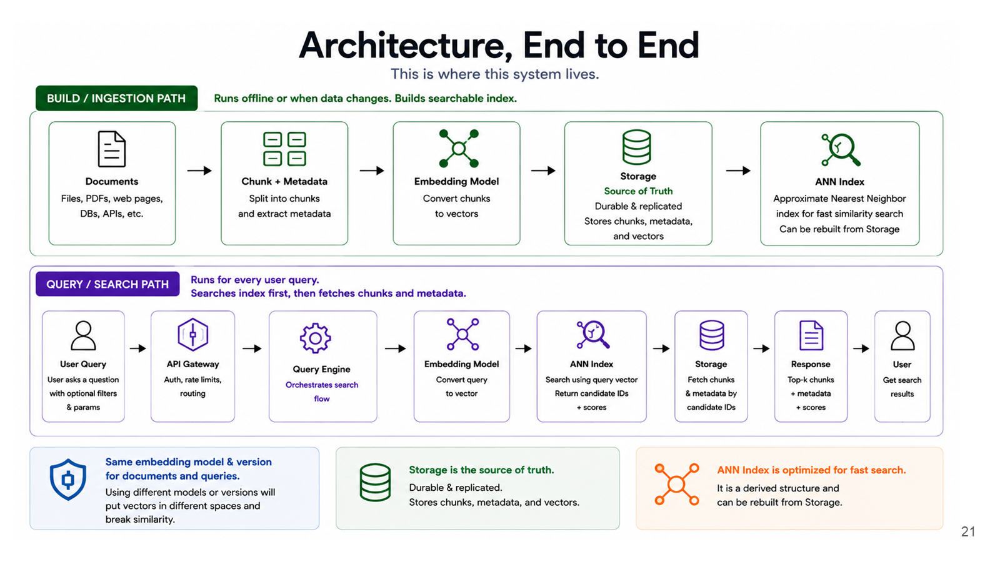
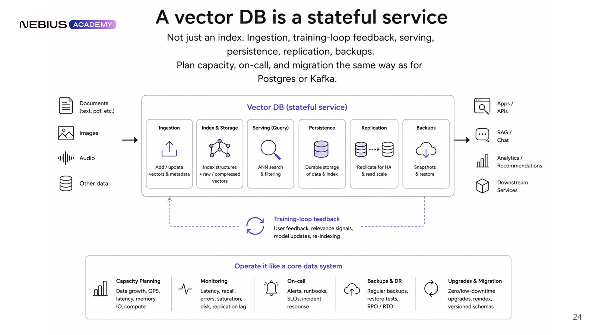
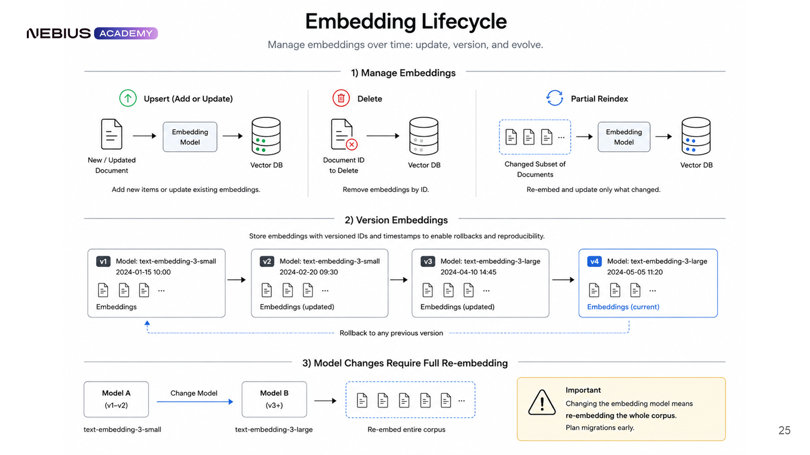
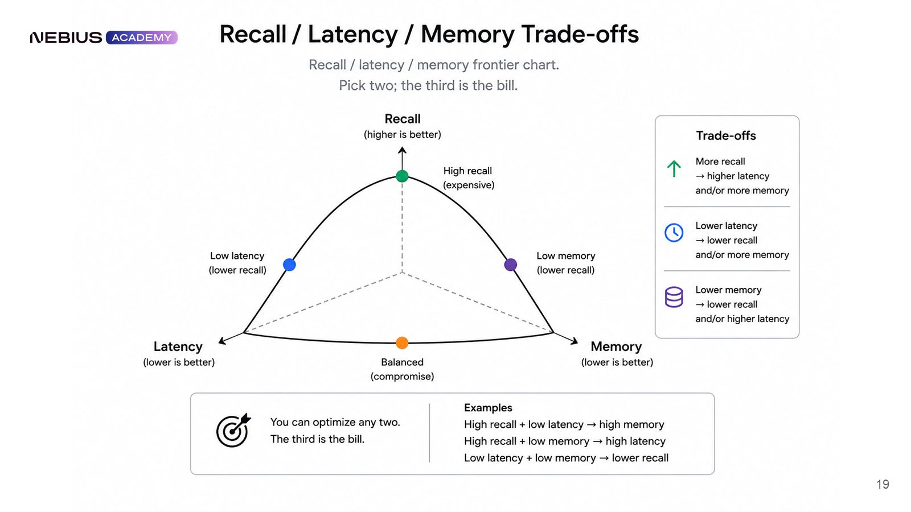

5 Keeping storage and retrieval state reliable
Which storage system fits each artifact, and how does retrieval state remain correct as data and embeddings change? Earlier chapters produced checkpoints, while Chapter 4 added traces, evaluation cases, and experiment records that outlive individual processes. Access patterns lead to storage semantics and then to a versioned vector-retrieval system with reproducible derived indexes.
Durable records and fast working copies serve different purposes. The storage path must keep GPUs supplied while preserving enough verified state for recovery. Retrieval adds another distinction: source text is evidence, while its numerical representation and search index are derived from that evidence. The chapter map connects these storage roles to the comparisons, search methods, and quality measurements needed to return useful passages.

5.1 Matching storage to AI access patterns
The system now has many persistent artifacts. Calling all of them ‘data’ hides whether they need byte-addressable updates, shared file paths, immutable object identities, or low-latency local reads. POSIX is a family of operating-system interface standards that includes file access through hierarchical paths. Its familiar operations do not automatically exist in an object-store API. Object size, concurrency, durability, and access pattern determine the suitable storage category.
- Access pattern: The combination of object size, operation mix, concurrency, locality, sharing, durability, consistency, latency, throughput, and lifecycle requirements for a dataset or artifact.

The hierarchy is a movement plan, not a ranking. GPU memory and local NVMe are fast and scarce. Shared file systems support concurrent workers. Object storage provides durable namespaces that can grow, but it does not behave like a local file system. Archive tiers trade retrieval delay for lower cost. The design stages data between tiers while keeping the source of truth distinct from a cache.
| Question | Why it changes the design | Example evidence |
|---|---|---|
| How large are objects? | Millions of tiny files stress metadata, multi-GB shards stress bandwidth. | Size histogram and file count |
| Who reads and writes? | One host can use local state, many workers need shared or replicated state. | Reader/writer topology |
| Sequential or random? | Large sequential reads favor throughput, small random reads need IOPS and indexing. | Block-size and seek distribution |
| Mutable or immutable? | In-place updates need different consistency and recovery than versioned objects. | Write/overwrite frequency |
| How durable? | Scratch data may vanish with a node, durable checkpoints cross failure domains. | RPO, RTO, retention |
| How fresh? | A retrieval index may lag source data only within an explicit freshness objective. | Allowed ingestion delay |
5.2 Matching storage interfaces to access and recovery needs
The access pattern identifies what the workload needs. Storage categories expose different namespaces, attachment models, concurrency, and durability rather than interchangeable capacity. Each category fits the role supported by its behavior.

Attachment and update semantics determine where each storage category is safe to use.
| Category | Core semantics | Good fit | Caution |
|---|---|---|---|
| Local / ephemeral | Host-attached path, lowest network overhead, lifetime tied to node unless separately copied | Caches, shuffle, temporary preprocessing, checkpoint landing zone | Node loss can erase it |
| Block | Raw virtual disk attached to a host, file system added by the user | Databases, single-node state, predictable random I/O | Multi-attach and failover depend on product semantics |
| Shared file | Hierarchical POSIX-like namespace visible to many nodes | Training datasets, shared workspaces, distributed checkpoint reads | Metadata hot spots and small files can dominate |
| Object | Keyed immutable-or-replaced objects accessed by API | Datasets, model registry artifacts, durable checkpoints, logs, backups | Rename/list/append semantics differ from POSIX |
Storage semantics: object storage guarantees and limits
Object storage exposes operations on keys. Its consistency and immutability guarantees belong to the selected service and operation, not to the category as a whole:
- An object PUT normally creates or replaces one object at a key. A directory may be only a key prefix, rename may require copy-plus-delete, and atomic append may not exist. Versioned keys can support an application policy of immutable records even when the API permits replacement.
- Libraries that assume POSIX file locking, partial writes, or cheap directory scans need an adapter, a staging cache, or a different backing store.
5.3 Preventing GPU idle time during data loading
Storage semantics now match the artifact type. A training job can still leave GPUs idle if decoding, metadata, network reads, or sample assembly cannot fill device queues. The input path is a pipeline of buffers, workers, shards, and observable backpressure.

The path usually includes durable source objects, a conversion or sharding stage, shared or local cache, CPU workers, pinned host memory, host-to-device transfer, and the accelerator. The slowest sustained stage bounds throughput. Prefetching hides latency only while downstream consumption does not outrun the buffer.
- Sequential-read shards. Moderately large immutable shards reduce metadata operations and produce longer reads.
- Recorded partitioning. Each data-parallel rank receives a sample stream determined by the seed, epoch, and sharding policy. Padding or dropping the final uneven partition changes whether all samples appear exactly once.
- Parallel decoding. Worker processes overlap parsing and augmentation within CPU, memory, and open-file limits.
- Identity-based caching. Immutable dataset or shard identities connect cache hit rate, capacity, and eviction behavior to a specific input version.
- Queue measurements. Batch-fetch time, GPU idle gaps, bytes/s, IOPS, cache hit rate, and failed reads reveal backpressure.
When transfer through host memory is the bottleneck, GPUDirect Storage (GDS) can move bytes between supported storage and GPU memory using direct memory access. Direct memory access lets a device transfer data without the CPU copying each byte. In the conventional path, a file read fills a host-memory buffer before another transfer fills the GPU buffer. A supported GDS path avoids that host bounce buffer. The CPU still opens files, schedules work, and performs any required decoding. Large ready-to-use tensor blocks can benefit, while data that needs CPU parsing first may not. Hardware topology, drivers, the filesystem, and the application’s I/O calls must support the direct path. These conditions and fallback behavior are described in the NVIDIA GDS overview.
The following abbreviated Python example uses PyTorch 2.11’s DataLoader and DistributedSampler. It demonstrates the conventional host-memory path, not GDS. A map-style dataset returns fixed-format examples, workers is greater than zero, and distributed initialization supplies rank and world size. The application supplies the remaining settings and helper functions, and records its exact PyTorch/CUDA build. move_to_device recursively transfers tensors to the selected GPU. train_step computes predictions and loss, then updates model and optimizer state as in Chapter 2. Dataset read failures propagate and require the enclosing job’s recovery policy. The PyTorch 2.11 data-loading reference defines the sampler’s padding and epoch behavior.
Code example: Abbreviated PyTorch 2.11 data loading with recorded partitioning and prefetched host-to-device transfer.
loader = DataLoader(
dataset,
batch_size=batch_size,
sampler=DistributedSampler(dataset, shuffle=True, seed=seed),
num_workers=workers,
pin_memory=True,
persistent_workers=True,
prefetch_factor=2,
)
for epoch in range(start_epoch, epochs):
loader.sampler.set_epoch(epoch)
for batch in loader:
batch = move_to_device(batch, non_blocking=True)
loss = train_step(batch)Code walkthrough: distributed data loading and device transfer
Preparing batches overlaps CPU input work with GPU computation:
- Rank partition:
DistributedSamplerpartitions sample indices across ranks. With its defaultdrop_last=False, it can repeat a few indices to make partition lengths equal.drop_last=Trueavoids that padding by omitting the tail, which also changes coverage. - Epoch state:
set_epochchanges the reproducible shuffle order between epochs. - Host pipeline: Worker processes, persistence, and prefetching prepare future batches while the accelerator executes the current batch.
- Transfer path: Pinned host memory and
non_blocking=Truepermit asynchronous host-to-device transfer. Overlap with computation also needs appropriate streams and scheduling, which the sketch does not implement. - Result: Correct partitioning protects statistical semantics, while buffering and transfer overlap protect accelerator utilization.
- Limits: More workers or prefetch slots can exhaust CPU, host memory, file descriptors, or storage bandwidth. Fetch time and queue depth reveal the limit. Larger values are not automatically better.
5.4 Writing recoverable checkpoints atomically
Chapter 2 defined checkpoint contents and recovery objectives. The remaining piece is a storage protocol that keeps a partial multi-rank save hidden. Fast landing, completeness validation, atomic publication, and copying across failure domains form that protocol.

A distributed checkpoint is a set of shards plus metadata, not merely a directory. Each writer first saves to a temporary generation. A coordinator verifies the expected world size, file hashes, byte counts, and training-state metadata. Only then does it publish a small completion manifest or pointer. Restore clients ignore generations without that commit marker.
Generation g17 remains current while four ranks write g18. If one rank fails, g18 has no completion manifest and cannot be restored. After every shard reaches the required durable tier, the coordinator publishes a manifest listing their immutable paths and checksums. A reader resolves that manifest once and restores only its listed files, rather than listing a partly written directory.
The atomic operation is the publication of one manifest or pointer, not a simultaneous write of all shards. A filesystem implementation can use an atomic same-filesystem rename after the required flushes. An object-store implementation needs a complete-object write and, when concurrent coordinators can publish, a conditional update against the expected prior generation or an equivalent lock. A losing or late writer cannot overwrite the accepted pointer. Exact visibility and durability requirements must match the selected storage API. This is staged writing followed by guarded publication, not a general distributed two-phase-commit protocol. A copy on local scratch still cannot survive node loss until a verified durable copy exists.
| Phase | Storage role | Required evidence |
|---|---|---|
| Fast landing | Local NVMe or high-throughput shared scratch | Writer rank, shard name, size, checksum |
| Committed generation | Shared namespace visible to all workers | Complete shard set and atomic manifest |
| Replicate | Object storage in another failure domain | Copy status and verified object hashes |
| Retention | Durable object or archive tier | Policy, expiry, legal/security constraints |
| Restore test | Fresh allocation and staging cache | Measured recovery time and resumed state identity |
Storage recovery calculation: checkpoint frequency versus lost work
Checkpoint timing connects recurring write overhead to expected lost work:
- Given: A job produces 18 minutes of useful work between checkpoints and needs 2 minutes to write each checkpoint.
- Failure position: Assuming a failure occurs uniformly within the 18-minute useful-work interval, expected lost work is half that interval: 9 minutes. Failures during the write itself are outside this simplified estimate.
- Recovery work: A node replacement and restore take 6 minutes.
- Expected interruption: The 9 minutes of expected lost work plus 6 minutes for replacement and restore produce about 15 minutes of interruption, excluding recurring checkpoint overhead.
- Decision: A shorter interval is justified only when reduced expected loss exceeds the added write load and pause.
- Conclusion: Checkpoint policy trades recurring overhead against expected lost work. Restore testing supplies the evidence.
5.5 Measuring storage performance for AI workloads
The correct storage category and protocol are now selected. Performance claims still fail when a benchmark uses a different block size, operation mix, cache state, or client count than the ML workload. A representative benchmark relates I/O operations to transferred bytes and includes the intended concurrency and tail behavior.

Let \(B\) be transferred bytes per second, \(\mathrm{IOPS}\) the number of completed I/O operations per second, and \(S_{\mathrm{block}}\) bytes transferred per operation. For equal-size transfers measured over the same interval, counting operations and multiplying by bytes per operation gives throughput. If sizes vary, the appropriate factor is the measured mean transferred size for those same operations, not a maximum configured request size.
\[ B = \mathrm{IOPS} \cdot S_{\mathrm{block}} \tag{5.1}\]
I/O throughput comparison: 4 KiB versus 1 MiB transfer sizes at fixed IOPS
Transfer block size determines effective storage bandwidth under constant operation rates:
- Operation rate: The storage path completes 25,000 read operations per second.
- Small transfers: At 4 KiB per operation, throughput is 102,400,000 bytes/s, about 97.7 MiB/s.
- Large transfers: At 1 MiB per operation, the same operation rate would imply 25,000 MiB/s if the system and network could sustain it.
- Constraint: In practice, achievable IOPS falls as transfer size grows and bandwidth limits become active.
- Conclusion: IOPS is useful only with transfer size, concurrency, latency, cache state, and operation mix.
The equality is descriptive, not a promise that either term remains constant. Increasing block size may reduce achievable IOPS. Increasing clients may expose network, metadata, or server limits. A complete result includes read/write mix, direct-versus-cached mode, queue depth, client count, object or file size distribution, warm-up, duration, percentiles, and failure rate.
Storage benchmark: purpose and limits
Benchmarking storage performance characterizes I/O capabilities under representative machine learning workloads:
- Works on: A specified client topology, operation mix, block-size distribution, and dataset size.
- Helps when: Selecting a tier or diagnosing an input, checkpoint, or retrieval bottleneck.
- How it works: Replays intended sequential and random operations while recording throughput, IOPS, latency percentiles, CPU, network, cache state, and errors.
- Other limits: Synthetic tests miss application parsing, metadata behavior, burst credits, and noisy-neighbor effects unless modeled.
- Why it matters: A defined workload makes benchmark numbers comparable and interpretable.
5.6 Representing text as comparable embeddings
Durable source records and efficient movement are established. Semantic retrieval needs a derived numerical representation whose model, preprocessing, and distance convention remain consistent. Embeddings, chunk identities, metadata, and score direction define the index inputs.
- Embedding: A fixed-length numeric vector produced by a specified model and preprocessing pipeline to represent an item for comparison.
Consider a support search for “When does my contract renew?” Documents have different lengths and wording. Comparing their raw characters would miss paraphrases, while sending every document to the answer model would be costly. The ingestion process splits each document into passages called chunks, retaining document version, chunk ID, and start/end offsets. A chunk such as “The contract renews in July” is tokenized and processed by an embedding model with fixed parameters. That model converts its variable-length token sequence into a vector of a fixed dimension. Chunk boundaries and any truncation can remove context, so the original text and offsets remain necessary.
The query follows the compatible query-encoding path of the same embedding model revision. Some models require distinct query and passage prefixes, so the two paths need a shared model contract rather than identical literal preprocessing. The resulting query vector and stored passage vectors have the same dimensions and distance convention. Fixed-length vectors allow one numerical scoring operation across many passages. They compress meaning rather than preserve every date, identifier, or logical relationship.
For an illustrative two-dimensional representation, assign query \(q=(1,2)\) and renewal passage \(x=(2,1)\). These chosen numbers show the calculation, not outputs of a real embedding model. A gardening passage with vector \(z=(-2,-1)\) would score \(-0.8\) against this query, below the renewal passage’s \(0.8\). The selected passage ID then retrieves the actual July sentence for the answer model. Similarity has found a candidate, not proved that it contains the right contract or a current renewal date. The figure shows the common shape that makes this comparison possible.

The vector is derived state. Its identity includes the source object and version, chunk start and end offsets, normalization, embedding model and revision, dimensionality, language or modality, and transformation code. The original text or media remains the durable evidence. Embeddings and indexes remain rebuildable from it. A model change requires the controlled migration in Section 5.9, not mixing vectors merely because their shapes match.
For nonzero vectors \(q\) and \(x\) with the same dimension \(d\), the dot product \(q^Tx\) is the sum of aligned products \(q_jx_j\) for components \(j=1,\ldots,d\). The Euclidean norm \(\lVert q\rVert\) is the square root of the sum of squared components. The same definition applies to \(x\). Dividing the dot product by both norms removes positive scale and yields the cosine of the angle between the vectors. Larger cosine similarity means closer direction, with values from -1 to 1. Zero vectors have no defined direction.
\[ \cos\left(q,x\right) = \frac{q^{T}x}{\left\lVert q\right\rVert \cdot \left\lVert x\right\rVert} \tag{5.2}\]
Geometric calculation: normalized inner product and cosine similarity
Dividing a dot product by vector lengths compares direction independently of magnitude:
- Vectors: The query is (1, 2) and the candidate is (2, 1).
- Dot product: The aligned component products are 2 and 2, so their sum is 4.
- Norms: Each vector has Euclidean norm √5, so the norm product is 5.
- Similarity: Dividing 4 by 5 gives cosine similarity 0.8.
- Conclusion: The vectors point in a similar but not identical direction. Multiplying either vector by a positive scalar would not change the cosine score.
This runnable function uses Python 3.14.4 and NumPy 2.4.3 and accepts two finite, nonempty, one-dimensional arrays. It returns one cosine-similarity float and raises ValueError for invalid shape, nonfinite values, or a zero vector. It does not modify either input. The final call prints approximately 0.8. This is a reference pairwise calculation, not an index or a pre-normalized search optimization.
Code example: Runnable reference cosine similarity using Python and NumPy.
import numpy as np
def cosine_similarity(query: np.ndarray,
candidate: np.ndarray) -> float:
query = np.asarray(query, dtype=np.float64)
candidate = np.asarray(candidate, dtype=np.float64)
if query.ndim != 1 or candidate.ndim != 1:
raise ValueError("inputs must be one-dimensional vectors")
if query.size == 0 or query.shape != candidate.shape:
raise ValueError("vectors must have equal nonzero dimensions")
if not np.isfinite(query).all() or not np.isfinite(candidate).all():
raise ValueError("vectors must contain only finite values")
query_scale = np.max(np.abs(query))
candidate_scale = np.max(np.abs(candidate))
if query_scale == 0 or candidate_scale == 0:
raise ValueError("cosine is undefined for a zero vector")
query = query / query_scale
candidate = candidate / candidate_scale
denominator = np.linalg.norm(query) * np.linalg.norm(candidate)
return float(np.clip(np.dot(query, candidate) / denominator, -1, 1))
print(cosine_similarity(np.array([1, 2]), np.array([2, 1])))Code walkthrough: reference cosine similarity
The function calculates norms for this pair before returning its score:
- Schema check: Equal array shapes enforce one embedding dimensionality before any score is computed.
- Domain check: A zero norm is rejected because the cosine denominator would be zero and direction is undefined.
- Numerical range: Each vector is divided by its largest absolute component before norm calculation. This positive rescaling preserves direction and avoids overflow when squaring large finite components. Clipping the final result to [-1, 1] removes tiny roundoff excursions.
- Numerator:
np.dotmeasures aligned component magnitude. - Normalization: Dividing by both Euclidean norms removes vector magnitude and returns a scalar direction score.
- Result: The function implements cosine similarity with explicit shape, finite-value, and nonzero-vector checks.
- Limits: Production retrieval usually uses a vectorized library or index, so dtype, normalization, numerical tolerance, and similarity-versus-distance direction are part of the implementation.

Metric definition: vector distance and similarity metrics
Vector similarity metrics describe geometry. Their usefulness for relevance depends on the embedding model and task:
- Thresholds require recalibration when the embedding model, normalization, or distance metric changes.
- The score definition states whether larger or smaller is better, its valid range, and every transformation applied before ranking.
Cosine distance is often defined as \(1-\cos(q,x)\), so smaller values are better and its range is 0 to 2. For vectors normalized to length 1 at ingestion and query time, the dot product alone gives cosine similarity. The function above does not assume that preprocessing. A score of zero indicates perpendicular vectors, not a universal guarantee that two texts have no related meaning.
5.7 Choosing a vector index for approximate search
Every candidate can be scored exactly when the collection is small. At production scale, exhaustive comparison makes query cost grow with the entire corpus. Approximate nearest-neighbor structures prune candidates, and their accuracy-latency trade-off is measured against an exact reference.
- Approximate Nearest Neighbor (ANN) search: Retrieval that uses an index to find likely close vectors without comparing the query with every vector.

The comparison separates an exact reference method from graph, partition, and compression-based approximations. A graph links nearby vectors. A partition groups vectors around representative centers. Compression replaces full coordinates with shorter codes, which can be combined with either structure.
| Method | Core idea | Strength | Trade-off |
|---|---|---|---|
| Flat / exact | Scoring every vector | Reference-quality results and simple updates | Latency and compute grow with corpus size |
| HNSW | Navigating a layered proximity graph | Strong recall and low query latency | Memory-heavy graph, build/update tuning matters |
| IVF | Probing selected coarse clusters | Controls scanned fraction with nprobe |
Misses neighbors in unprobed cells |
| Product quantization | Compact codebooks for vector subspaces | Large memory reduction and fast approximate distance | Compression reduces score fidelity |
| IVF-PQ | Probing coarse cells and scoring compressed codes | Scales large collections within memory limits | Two approximation stages require calibration |
Hierarchical Navigable Small World (HNSW) search uses a proximity graph with several layers. Every vector appears in the base layer, while progressively smaller subsets also appear in upper layers. During construction, a new vector receives a randomly selected highest layer and connects to selected neighbors. The sparse upper layers provide long-range movement. The denser base layer supplies local alternatives. The graph costs extra memory for its edges as well as stored vectors.
A query starts from an existing upper-layer entry point, moves to a closer neighbor when one is found, and descends from the best point reached. At the base layer, it maintains candidate nodes to explore, a visited set, and a bounded set of best results. efSearch controls search breadth, not an exact count of distance calculations. Retaining more alternatives can find a better route but costs work. The Faiss index documentation describes this control separately from graph connectivity and construction effort.
An illustrative graph makes the state visible. Use query \((0,0)\) and squared Euclidean distance, so smaller is better. Nodes A, B, C, and D have coordinates \((4,0)\), \((2,0)\), \((1,1)\), and \((0.5,0)\), giving query distances 16, 4, 2, and 0.25. The upper layer contains the A–B link. At the base layer, B links to A and C, and C links to D.
- Entry A has distance 16. Its upper-layer neighbor B has distance 4, so search moves to B and descends.
- With base-layer result capacity 2, the initial result and candidate sets contain B. Expanding B discovers C at distance 2 and A at distance 16. C improves the result set to C, B. A is worse than both retained points.
- Expanding C discovers D at distance 0.25. The retained results become D, C. Exploring the remaining competitive candidates finds no improvement in this small graph.
- For a request for one result, D is returned. Search reached it through C even though D had no upper-layer entry. In a larger graph, an unvisited region could still contain a better vector.
This trace shows why retaining several possible routes helps and why approximate results still need comparison with exact neighbors. Connectivity, build effort, filtering, and the corpus affect the useful efSearch setting. More search effort is measured against recall and tail latency, not treated as a universal default.
Inverted File (IVF) search divides the vector space around learned centroids, which are representative centers of clusters. Each centroid owns a list of assigned vector IDs. At query time, nprobe selects how many nearby centroid lists to search. One list reduces work but can miss a neighbor across a cluster boundary. More lists reduce that risk while increasing the scan. IVF by itself can store full vectors and compute exact distances inside the selected lists.
Product quantization (PQ) reduces the stored coordinates. It divides each vector into subvectors and fits a small codebook for each part. A codebook is a table of representative subvectors. The stored code selects one entry from each table. Distances can then be approximated by looking up each part’s contribution and adding them, instead of reading every original coordinate.
In the residual IVF-PQ form shown below, the encoder first subtracts a vector’s assigned coarse centroid. PQ encodes that residual. Search chooses coarse lists, forms the corresponding query residuals, and sums lookup-table distances to the compressed codes. The figure separates these build and query paths.

For a small numerical trace, let one selected centroid be \((10,10,0,0)\) and its vector be \((11,9,2,0)\). Subtraction produces residual \((1,-1,2,0)\). Splitting it into two parts gives \((1,-1)\) and \((2,0)\). Suppose the learned codebooks contain those entries at indices 7 and 3. The stored PQ code is then (7, 3) along with the vector ID and list membership.
A query \((10.8,9.2,1.9,0)\) has residual \((0.8,-0.8,1.9,0)\) relative to the same centroid. Its first-part lookup at code 7 gives squared distance \(0.2^2+(-0.2)^2=0.08\). The second-part lookup at code 3 gives \((-0.1)^2+0^2=0.01\). The summed distance is 0.09. A second candidate uses \((0,0)\) for its first code and still uses code 3 for its second code. It scores \(0.8^2+(-0.8)^2+0.01=1.29\), so the first candidate ranks closer.
Here the codebook entries reproduce the first vector exactly, which makes its calculated distance exact. Usually they approximate the residual, and that rounding can change the order. There are two distinct error sources: an unprobed IVF list hides candidates completely, while PQ can misorder candidates that were scanned. Increasing nprobe addresses the first source. Larger codes or exact rescoring of retained candidates address the second. Exact rescoring cannot recover a candidate already excluded from the shortlist.
With four float32 coordinates, the original vector uses 16 bytes. Two 8-bit code indices use 2 bytes, excluding vector IDs, list metadata, and shared codebooks. At realistic dimensions the same compression principle saves memory, but codebook training and score error must be measured. HNSW with full vectors often fits a high-recall, low-latency workload when graph memory is affordable. IVF-PQ is useful when a large collection must fit a tighter memory budget. Neither removes the need for workload-specific tests, and graph search can also be combined with compression.
5.8 Combining dense and sparse retrieval
ANN search retrieves semantically close vectors. Dense similarity can miss exact identifiers, rare names, recency constraints, access-control rules, or domain-specific lexical matches. A staged retriever gives each component an explicit candidate, filtering, scoring, or packing role.
A dense retriever independently encodes the query and passages, so stored passage vectors can be reused. A sparse retriever represents matching terms rather than a dense vector of learned features. BM25 is one common sparse scoring method: it rewards informative matching terms while adjusting for term frequency and document length. It can retrieve a rare part number that dense search misses. A cross-encoder instead reads a query and candidate passage together, allowing their tokens to interact when producing a relevance score. That extra computation usually limits it to a smaller candidate set.
The figure shows how independent candidate lists join before the more expensive pairwise scoring stage.

The combined path assigns a specific job to each stage:
- Authorization and metadata filters restrict the eligible corpus. Filtering before search can reduce wasted candidates, but index support varies. Filtering only after a top-k search can leave too few authorized results, so search may need a larger candidate set or repeated retrieval. No rejected content may reach the answer prompt.
- Dense and sparse search produce separate ranked lists over the permitted records. Both retain chunk IDs and source versions.
- Rank fusion combines their positions without adding scores that use incompatible scales. Deduplication joins identical chunk IDs while preserving the two contributions.
- A cross-encoder rescores the fused shortlist. Context assembly then removes redundant passages, fits the token budget, and retains citation IDs and source text.
Reciprocal Rank Fusion (RRF) gives each retrieved document \(d\) a contribution from each list \(r\). Its position \(\operatorname{rank}_r(d)\) starts at 1. The positive smoothing constant \(k\) is not the number of results requested by top-k search. A missing document contributes zero for that list, equivalent to an infinite rank. Each contribution is the reciprocal of \(k\) plus position, so better positions contribute more and appearance in both lists can outweigh a single first place.
\[ \operatorname{RRF}\left(d\right) = \sum_{r \in \left\{\mathrm{dense},\mathrm{sparse}\right\}} \frac{1}{k+\operatorname{rank}_r\left(d\right)} \tag{5.3}\]
Dense search returns A, B, C and sparse search returns B, D, A. Use \(k=60\):
| Document | Dense | Sparse | Total |
|---|---|---|---|
| A | \(1/61 \approx 0.01639\) | \(1/63 \approx 0.01587\) | \(0.03227\) |
| B | \(1/62 \approx 0.01613\) | \(1/61 \approx 0.01639\) | \(0.03252\) |
| C | \(1/63 \approx 0.01587\) | \(0\) | \(0.01587\) |
| D | \(0\) | \(1/62 \approx 0.01613\) | \(0.01613\) |
Descending totals give B, A, D, C. B wins because it ranks near the top in both lists, not because its dense and sparse raw scores are comparable. Increasing \(k\) reduces the relative advantage of the first few positions and makes list agreement more influential. A smaller value emphasizes top positions. This example uses equal list weights. Duplicate IDs within a list must be removed, and exact ties need a stable rule such as ascending document ID. Fusion improves candidate selection only when its combined evidence is useful on labeled queries.
The Python-like pseudocode below connects these stages. The application supplies versioned embedding, vector-search, lexical-search, fusion, cross-encoder, and packing interfaces. Input is query text plus an authorization filter. Output is source text with citation IDs inside a token budget. No particular database or library version is implied by these application-defined calls. Their implementations and versions must be fixed for a measured run. Timeout, missing-document, and authorization failures must stop or explicitly degrade retrieval under the service policy.
Code example: Hybrid retrieval pipeline with versioned embedding, authorization, fusion, reranking, and citation packing.
query_vector = embed(query, model=EMBEDDING_VERSION)
dense = vector_index.search(query_vector, top_k=80, filters=acl_filter)
sparse = lexical_index.search(query, top_k=80, filters=acl_filter)
fused = reciprocal_rank_fusion(dense, sparse)
ranked = cross_encoder.rerank(query, fused[:40])
context = pack_with_citations(ranked[:8], token_budget=6000)Code walkthrough: Reciprocal Rank Fusion hybrid search
Combining positions avoids treating dense and sparse raw scores as comparable:
- Vector-space identity:
EMBEDDING_VERSIONselects the same model and preprocessing identity used to build the collection. - Access control:
acl_filterconstrains both candidate generators before unauthorized content can enter fusion or the prompt. - Candidate fusion: Dense and sparse lists are merged by rank rather than by adding raw scores with incompatible scales.
- Cost funnel: The cross-encoder scores only 40 fused candidates, and the packer retains eight cited items inside the token budget.
- Result: Each stage narrows or validates state while preserving source identities for the generated answer and later evaluation.
- Limits: The sketch omits timeouts, deduplication policy, score calibration, empty-result behavior, freshness checks, and trace emission. Those belong to the production requirements.
5.9 Running vector databases as stateful services
The retrieval algorithm is now explicit. A production vector system also ingests updates, persists state, replicates data, rebuilds indexes, backs up metadata, and survives version changes. Durable source records and derived collections have separate lifecycle and recovery rules.

The build path reads versioned source records, applies recorded chunking and embedding settings, writes vector records with metadata, and constructs an index. The query path embeds one query, applies authorization and filters, retrieves candidates, reranks, and returns source identifiers. Both paths share the same schema and compatible embedding contract. Recording versions supports reproduction, but exact output equality also depends on the model implementation and execution environment.

The recovery map distinguishes authoritative records from derived vector state that may be restored or rebuilt.
| State | System of record | Recovery action |
|---|---|---|
| Original document/media | Durable object or document store | Exact-version read by immutable ID |
| Chunk manifest | Versioned metadata table | Recreate chunk text and ordering |
| Embedding record | Vector collection plus model/preprocess metadata | Re-embed missing or invalid records |
| ANN index | Derived index files and build configuration | Restore compatible snapshot or rebuild |
| ACL and tenant metadata | Authoritative application/identity store | Reapply and verify before serving |
| Query/evaluation traces | Governed telemetry store | Replay workload-matched cases after recovery |
An embedding-model change creates a new vector space. Mixing old and new vectors in one index usually makes scores meaningless. A versioned collection receives the backfill, count and quality checks, shadow or canary queries, and then an alias switch. The previous collection remains available for rollback. Tombstones or source-version reconciliation keep deleted content out of retrieval.
The lifecycle figure connects updates within an existing embedding contract to the separate full rebuild required by a new model.

- Source snapshot. The migration controller records the source snapshot, chunking revision, access-control metadata, and deletion watermark that define the migration input.
- Parallel build. Embedding workers write vectors and the ANN index into a new versioned collection. The current production alias remains unchanged while failed workers retry.
- Reconciliation gate. A validator compares expected and actual source, chunk, vector, tenant, dimension, and delete counts. It also compares sample retrieval cases with the prior collection.
- Cutover and rollback. The release controller changes the alias only after the gates pass, retains the previous collection for rollback, and records the transition in the manifest. Each request resolves one release record containing both embedding configuration and collection ID, then retains that pair through retrieval. Resolving a model alias and collection alias separately could mix incompatible old and new states.
5.10 Balancing retrieval quality and latency
The vector service has a defined build path, query path, and migration method. Index microbenchmarks alone cannot show whether the right evidence reaches the LLM under production filters and load. Retrieval quality, tail latency, resource use, freshness, and end-to-end grounded-answer quality are measured on intended workload slices.
For one query, let \(G\) be the set of relevant document or passage IDs under a declared reference policy. Let \(R_k\) be the unique IDs returned in the first \(k\) positions. The intersection \(R_k\cap G\) contains the retrieved relevant IDs. Vertical bars count set members. Recall@k divides that count by all relevant IDs, so the denominator is the reference set size rather than the number retrieved. The score is undefined when the reference contains no relevant item. Such queries need a separate no-answer policy.
\[ \mathrm{Recall}@k = \frac{\lvert R_k \cap G \rvert}{\lvert G \rvert} \tag{5.4}\]
Retrieval metric calculation: Recall@5 for ranked document candidates
Measuring retrieved candidate overlap with ground-truth relevant passages quantifies search quality:
- Reference set: Human labels identify four relevant documents.
- Retrieved set: The top five results contain three of those four relevant documents plus two irrelevant documents.
- Intersection: Three retrieved identities belong to the reference-relevant set.
- Recall: Dividing 3 by 4 gives recall@5 of 0.75.
- Conclusion: The score measures evidence coverage, not ranking quality or whether the generator cites and uses the evidence correctly.
The same result has precision@5 of \(3/5=0.60\), because precision divides relevant retrieved items by returned items. For an ANN index test, \(G\) can instead be the exact top-k nearest neighbors under the same metric. That measures how well the approximate index reproduces exact search, not whether those neighbors are useful evidence. A product evaluation uses human relevance judgments and tests filters, current versions, and the intended task.
Mean reciprocal rank (MRR) measures how early the first relevant item appears. For each query, take the reciprocal of the first relevant item’s one-based rank. Assign zero when none appears within the declared cutoff. Then average these values across queries. For three queries with their first relevant result at rank 1, rank 3, and nowhere in the top five, the contributions are 1, \(1/3\), and 0. MRR@5 is \((1+1/3+0)/3\approx0.444\). Moving the second query’s relevant result from rank 3 to rank 2 raises MRR@5 to 0.5. This is useful when finding one good answer quickly matters. It ignores every relevant result after the first, so it is insufficient when an answer needs several supporting passages.
Normalized discounted cumulative gain (nDCG) evaluates an ordered list with graded relevance. Suppose grade 0 means irrelevant, 1 partially useful, and 2 directly answers the query. One common convention converts grade \(g_i\) at position \(i\) to gain \(2^{g_i}-1\) and discounts it by \(\log_2(i+1)\). Summing these discounted gains through cutoff \(k\) gives DCG@k. Dividing by the ideal DCG@k, calculated from the same judged items in descending relevance order, gives nDCG@k. The gain convention, relevance policy, cutoff, and handling of unjudged items must be fixed before comparing systems.
For returned grades 1, 0, 2, the gains are 1, 0, 3. DCG@3 is \(1/\log_2(2)+0/\log_2(3)+3/\log_2(4)=2.5\). The ideal order 2, 1, 0 gives \(3+1/\log_2(3)\approx3.631\). The resulting nDCG@3 is \(2.5/3.631\approx0.689\). The high-value passage at rank 3 reduces the score even though recall over all three items is unchanged. An ideal order scores 1. When every judged item has grade zero, ideal gain is zero and the query needs an explicit exclusion or zero-score convention. Scores can be averaged across a fixed query set, but incomplete judgments and disagreement about grades remain measurement limits.
These measures answer different questions: recall counts missing relevant evidence, MRR emphasizes the first useful hit, and nDCG rewards ordering several items by their usefulness. The Elasticsearch ranking evaluation reference documents these metric choices and cutoff conventions. Appendix A provides the formula reference and Appendix B the terminology lookup.
Higher recall can require a wider search and more memory or time. The comparison figure makes these competing costs visible.

The benchmark figure extends that comparison to the full workload. A good index score alone says nothing about update delay or overloaded service replicas.

A reproducible acceptance criterion includes retrieval quality, latency, resources, freshness, reliability, and end-to-end answer quality.
| Dimension | Minimum measurement | Required slice |
|---|---|---|
| Retrieval quality | Recall@k, precision@k, MRR or nDCG | Query type, language, tenant, document age |
| Latency | p50/p95/p99 build and query stage timing | Concurrency, corpus size, filter selectivity |
| Resources | Memory, CPU/GPU, storage, network, index size | Steady state and rebuild |
| Freshness | Source commit to searchable time | Insert, update, delete, full re-embedding |
| Reliability | Error rate, recovery time, replica divergence | Node loss, restart, partial ingestion |
| End-to-end | Citation precision and grounded answer quality | Full RAG workload and evaluator cases |
Retrieval trade-off analysis: balancing recall and latency in hybrid search
Comparing retrieval candidates reveals the trade-off between speed and evidence coverage:
- Candidate A: Recall@5 is 0.82 at p99 query latency of 95 ms with a 1.4 GB index.
- Candidate B: Recall@5 is 0.79 at p99 latency of 42 ms with a 0.8 GB index.
- Candidate C: Recall@5 is 0.86 at p99 latency of 180 ms with a 2.1 GB index.
- Decision: If the product requires recall \(\geq\) 0.80 and p99 \(\leq\) 120 ms, Candidate A is feasible, B misses recall and C misses latency. The same comparison is repeated on tenant and document-age slices before release.
- Conclusion: This comparison makes the selected operating point explicit and keeps a single aggregate score from hiding a failed constraint.
Chapter 5 summary
Key storage and retrieval principles established in this chapter:
- Core mechanisms: Storage tiers use POSIX, S3, and NVMe. GPUDirect Storage moves data, HNSW graphs support vector search, and reciprocal rank fusion combines dense and sparse results.
- Governing tradeoffs: Vector index recall vs. p99 search latency, build time and RAM footprint vs. search throughput, dense semantic matching vs. exact keyword precision.
- Failure modes and controls: A guarded checkpoint manifest keeps partial generations out of restore, while a versioned collection change keeps incompatible embeddings out of one query path.
Storage, similarity, index choice, hybrid retrieval, and embedding migration are revisited in Appendix C, Questions 13 through 19, with concise explanations of the associated decisions.
Carry-forward result
The system now owns durable source artifacts, recoverable checkpoints, and a versioned retriever. Chapter 6 turns those responsibilities into retryable task descriptions.